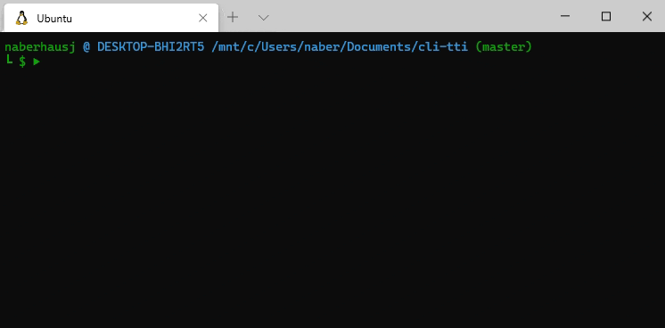

CLI TTI (Time to Interactive)
Background
While working on Go-Mitizen I wanted to compare the startup speed of my program to the original Commitizen client. For typical CLI commands that run, perform a task, and then immediately exit the time command can be used to measure how long this process took. However, I was working on a TUI (Terminal User Interface), which waits for user input once it has started. Instead, what I needed was an equivalent to the TTI (time to interactive) metric that is prolific in website benchmarking. TTI is an approximation of how long a user must wait before the website or program is ready to be used. Since I couldn't find an existing implementation of this, I decided to write my own.
Design
Measuring TTI occurs in two distinct steps. First, I run the program once and wait a long duration of time. After waiting, my program assumes that whatever output the program has produced in the terminal is interactive. In the second step, I run the program several times, measuring the time until the program's output matches the expected output we captured before. Finally, the user is shown the durations and their average.
This method works well for many CLI and TUI applications, but there is a class of programs that it fails for. If a program doesn't produce the same output every time it is run, then we can't just compare outputs to determine when a program is interactive. One example of a program like this is top, whose output changes based on the current processes running on the computer. Fixing this would require a far more advanced (and probably cumbersome) way of identifying when a program is interactive, so this solution was perfect for my case.